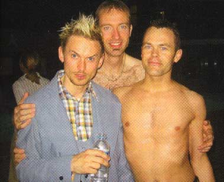

| Juni 2003 |

Foto: Jacob Hedegaard
Omkring 3000 danske og ikke mindst udenlandske homoer festede for vildt. Der var fire store dansegulve, så gæsterne kunne vælge mellem pop/disko, house/trance, Ball Room og sidst, men ikke mindst, DJ Alexis, som sørgede for fede rytmer til dansegulvet i selve svømmehallen.
Print denne side